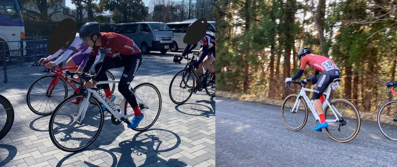

About Me
Hello! My name is Kazuma IKESAWA, I am from Osaka. I learn about Information Science at Ritsumeikan University. I have some hobbies. First, I enjoy cycling. It has been 9 years since I first rode a roadbike. I was a member of the cycle race club at Ritsumeikan Univercity. The races result that I get a award are listed in the portfolio above. I may never race again, however I want to enjoy cycling for the rest of my life. I also enjoy horse racing. In Japan, horse rasing is something of a symbol of gambling, but I enjoy it as a sports. (but of course I am betting.) Horse racing is known as a blood-sports, and I am looking forward to see my favorite horse's kids run in races. Traveling is also one of the my hobbies. It is similarities to the cycling. I bring my bicycle to the destinations, and I ride it at there. Riding on unknown roads is very fun and exciting. Eating delicious food while traveling can also be a fun experience. When I travel, I usually only research food. Food is the most important elements of trip for me.